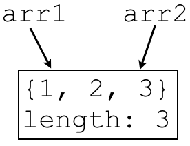
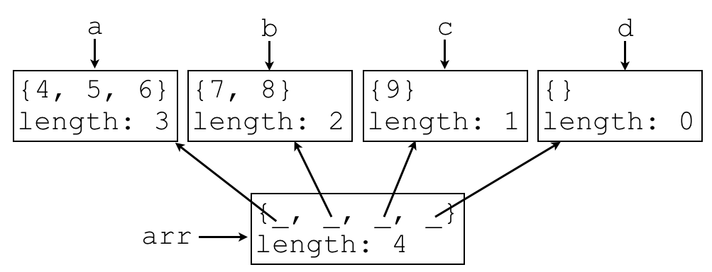

Consider the following code snippet:
int[] arr1 = new int[]{1, 2, 3};
int[] arr2 = arr1;
Write a memory diagram representing how memory “looks” after the above code snippet is executed.
Consider the following code snippet:
int[] arr1 = new int[]{1, 2, 3};
int[] arr2 = arr1;
arr1[0] = 5;
arr2[2] = 7;
Write a memory diagram representing how memory “looks” after the above code snippet is executed.

Consider the following code snippet:
int[] a = new int[]{4, 5, 6};
int[] b = new int[]{7, 8};
int[] c = new int[]{9};
int[] d = new int[0];
int[][] arr = new int[][]{a, b, c, d};
Write a memory diagram representing how memory “looks” after the above code snippet is executed.
Consider the following code snippet:
public class TwoInstance {
private int x;
private Object obj;
public TwoInstance(int x, Object obj) {
this.x = x;
this.obj = obj;
}
public static void main(String[] args) {
TwoInstance first = new TwoInstance(3, new Object());
Object temp = new Object();
TwoInstance second = new TwoInstance(7, temp);
// HERE
System.out.println();
}
}
Assume we run the main method of the above program.
Write a memory diagram representing how memory “looks” when // HERE is reached.
You do not need to include args or this in your diagram.
public class Class1 {
private int x;
public Class1(int x) {
this.x = x;
}
}
public class Class2 extends Class1 {}
Class2does not define a constructor that takes anint.
public class Class3 {
protected int x;
public Class3(int x) {
this.x = x;
}
}
public class Class4 extends Class3 {
public Class4(int x) {
super(x);
}
public int getX() {
return x;
}
}
No problems;Class4now has access tox, sincexisprotected.
public abstract class Class5 {
public abstract void m();
}
public class Class6 extends Class5 {}
Class6does not overridem.
public abstract class Class7 {
public abstract void m();
}
public abstract class Class8 extends Class7 {}
No problem; sinceClass8isabstractit does not need to implement allabstractmethods.
public interface Interface1 {
public void m();
}
public abstract class Class9 implements Interface1 {}
No problem; sinceClass9is declaredabstract, it does not need to overridem.
public interface Interface2 {
public void m();
}
public class Class10 implements Interface2 {}
Class10is notabstractand does not overridem.
public class Class11 {}
public class Class12 extends Class11 {
public static void m() {
Class11 x = new Class12();
}
}
No problems.Class12is-aClass11, so an instance ofClass12can be assigned to a variable of typeClass11(polymorphism).
main method of Class13 below?
public class Class14 {
public void m() {
System.out.println("foo");
}
}
public class Class15 extends Class14 {
public void m() {
System.out.println("bar");
}
}
public class Class13 {
public static void main(String[] args) {
Class14 x = new Class14();
Class14 y = new Class15();
Class15 z = new Class15();
x.m();
y.m();
z.m();
}
}
foo bar bar
main method of Class16 below?
public class Class17 extends Exception {}
public class Class16 {
public static void throwException() throws Class17 {
throw new Class17();
}
public static void main(String[] args) {
System.out.println(1);
try {
System.out.println(2);
throwException();
System.out.println(3);
} catch (Class17 e) {
System.out.println(4);
}
System.out.println(5);
}
}
1 2 4 5
public class Class18 {}
public class Class19 {
public static void m() throws Class18 {
throw new Class18();
}
}
Class18does not inherit fromException.
public class Class20 extends Exception {}
public class Class21 {
public static void m() {
throw new Class20();
}
}
MethodmofClass21is not annotated withthrows Class20, but it does throwClass20.
public class Class22 extends Exception {}
public class Class23 {
public static int m() throws Class22 {
return 42;
}
}
MethodmofClass23is annotated to throwClass22, but it will never throwClass22.
public class Class24 extends Exception {}
public class Class25 {
public static void throwsException() throws Class24 {
throw new Class24();
}
public static int m() throws Class24 {
try {
throwsException();
} catch (Class24 e) {
return 1;
}
return 0;
}
}
While aClass24exception is thrown within themmethod ofClass25, this exception will always be caught, somwill never throw it. Thethrows Class24annotation onmneeds to be removed.
public class Class26 extends Exception {}
public class Class27 {
public static void throwsException() throws Class26 {
throw new Class26();
}
public static int m() throws Class26 {
try {
throwsException();
} catch (Class26 e) {
return 1;
}
}
}
This will not compile, as Java is not smart enough to know thatthrowsExceptionwill always throw an exception. IfthrowsExceptionhappened to not throw an exception, methodmwould not return anything. However,mmust return anint.
import java.io.File;
import java.io.FileNotFoundException;
import java.util.Scanner;
public class Class28 {
public static void main(String[] args) {
try {
Scanner input = new Scanner(new File("input.txt"));
if (input.hasNextLine()) {
System.out.println(input.nextLine());
}
} catch(FileNotFoundException e) {
System.out.println(e.getMessage());
}
}
}
Does not close the input file (missing input.close()).
import java.io.File;
import java.io.FileNotFoundException;
import java.util.Scanner;
public class Class29 {
public static void main(String[] args) throws FileNotFoundException {
Scanner input = new Scanner(new File("input.txt"));
if (input.hasNextLine()) {
System.out.println(input.nextLine());
}
input.close();
}
}
In the event that there is a problem reading the file (but not opening the file), this will fail to close the file. The.close()should be wrapped in afinallyblock, as in this example.